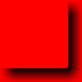

Roner - Rounded Corner Generator
Implemented in Java
You can use the rounded corner and shadow boxes with easy now.
URL: http://localhost:8080/Roner/rounded?
| Parameter | Meaning | Valid Values |
|---|
| f | FILENAME | Only when run through console |
| c | COLOR | COLOR |
| bc | BACKGROUND | COLOR |
| ibc | INNER BACKGROUND | COLOR |
| w | WIDTH | int |
| h | HEIGHT | int |
| a | ANGLE | tl, tr, bl, br |
| sw | SHADOW WIDTH | int |
| o | SHADOW OPACITY | 0.0 to 1.0 |
| s | SHADOW SIDE | left, right, top, bottom |
| shadow | WHOLE SHADOW | true or false |
| ah | ARC HEIGHT | float |
| aw | ARC WIDTH | float |
COLOR:In RGB (like, d7d7d7 etc.) and
aqua, black, blue, fuchsia, gray, green, lime, maroon, navy, olive,
red, silver, teal, white, yellow
Output is PNG format image.
Few Examples
| http://localhost:8080/Roner/rounded?c=blue&a=tl&w=100&h=100&bc=white |
| http://localhost:8080/Roner/rounded?c=d7d7d7&a=br&w=100&h=100&bc=blue |
|  |
http://localhost:8080/Roner/rounded?shadow=true&bc=red&w=100&h=100&aw=10&ah=10&sw=10&o=0.99999 |
|
http://localhost:8080/Roner/rounded?shadow=true&bc=white&ibc=efefef&w=100&h=100&aw=10&ah=10&sw=5&o=0.99999 |
|
http://localhost:8080/Roner/rounded?s=left&sw=100 |
|
http://localhost:8080/Roner/rounded?s=top&sw=30 |